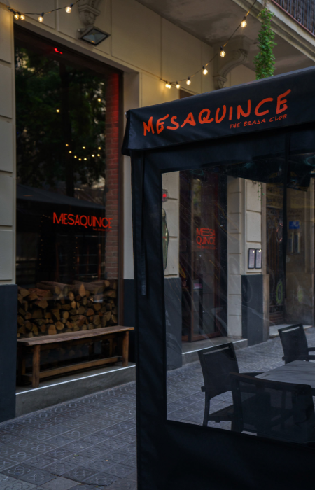

Cómo llegar aMESAQUINCE
C/ de Muntaner, 189, L'Eixample, 08036 Barcelona, España
Accesos
En coche
Para quienes llegan en auto, hay unestacionamiento público amplio a pocos minutos a pie. También es posible aparcar en calles adyacentes (zona regulada).
En transporte público
- Ferrocarrils (FGC) / Metro L6: Estación Muntaner, a solo 3-5 minutos caminando.
- Autobuses: Líneas V13, H10, 63 y otras con paradas cercanas en C/ Muntaner y Via Augusta.
- Cercanías (Renfe / Rodalies): Desde Plaça Catalunya conectar con FGC hasta estación Muntaner.
